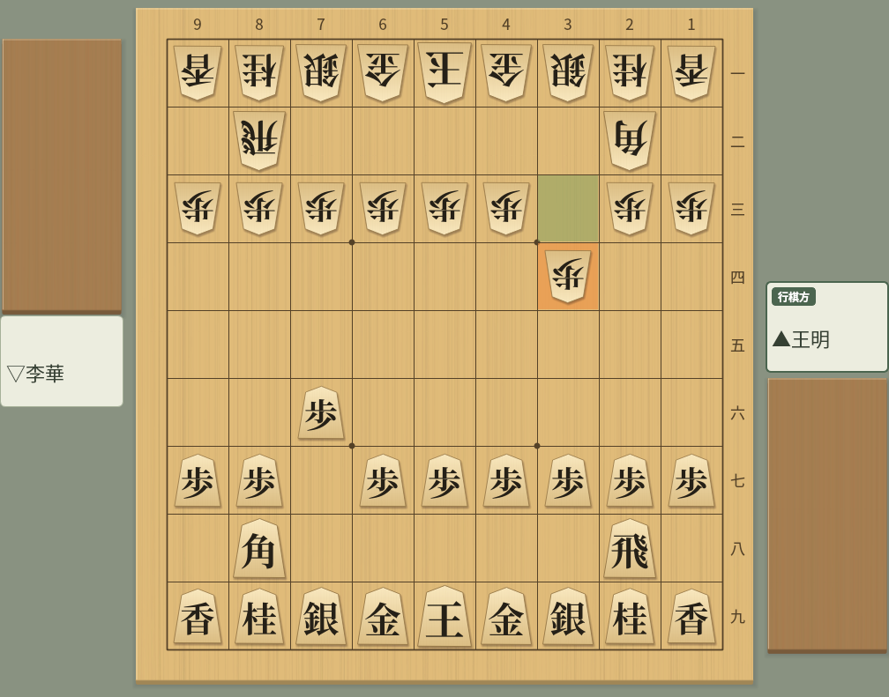

在 Claude、Cursor、VS Code、Gemini CLI 和 Codex CLI 中使用 ShogiBoardQ
ShogiBoardQ 附帶 Model Context Protocol（MCP）伺服器
MCP 是讓 AI 用戶端（Claude Desktop、Claude Code、Cursor、VS Code 中的 GitHub Copilot、Gemini CLI、Codex CLI 等）呼叫外部工具的通用規範。註冊 ShogiBoardQ 的 MCP 伺服器（shogiboardq-mcp）後，只需對 AI 用戶端說「把這份棋譜轉換為 CSA」「把這個局面分析 10 秒」「產生 5 道三手詰」，用戶端就會呼叫 ShogiBoardQ 的功能來完成。
伺服器同時支援 MCP 規範的最新版（2026-07-28）和以前的版本（2024-11-05〜2025-11-25），新舊用戶端都可以連線。
以下工具在內部執行 shogiboardq-cli，不需開啟視窗。
| 工具 | 功能 |
|---|---|
| convert_kifu | 把棋譜檔案或文字轉換為 KIF、KI2、CSA、JKF、USI、USEN 或 SFEN 清單 |
| validate_sfen | SFEN 是否合法、行棋方、持駒、是否將軍、合法著法數 |
| list_engines | 在 ShogiBoardQ 中註冊的 USI 引擎 |
| analyze_position / analysis_status / analysis_result | 用已註冊的引擎分析局面（支援 MultiPV，工作方式） |
| analyze_kifu / kifu_analysis_status / kifu_analysis_result | 分析整份棋譜的主線。支援指定範圍、進度、分頁取得結果和取消 |
| search_mate / mate_status | 用支援 go mate 的引擎搜尋詰棋（工作方式） |
| generate_tsume / tsume_generation_status / stop_tsume_generation | 自動產生詰棋局面（工作方式） |
| verify_tsume | 餘詰檢查（唯一解 / 有餘詰 / 不詰 / 手數不符 / 無法判定） |
| render_board_image | 從 SFEN 產生棋盤的 PNG 圖片 |

render_board_image 的輸出範例：與 GUI 相同的棋子圖片和配色，並可醒目提示最後一手。「行棋方」等標籤和段的座標會依照 ShogiBoardQ 的介面語言和記法設定顯示
以 --automation 啟動 ShogiBoardQ 後，可以用以下工具讀取和修改視窗中的局面和棋譜。
| 工具 | 功能 |
|---|---|
| get_app_state | 狀態（待機、對局中、分析中等）、目前手數、棋譜檔名、是否有未儲存的變更、開啟的對話方塊 |
| get_position / set_position | 取得目前局面的 SFEN 和著法，設定局面 |
| load_kifu / save_kifu / get_kifu / goto_ply | 讀取、儲存和取得棋譜（可指定格式和手數範圍），移動到指定手數 |
| list_actions / trigger_action | 列出並執行選單操作（允許清單方式） |
| capture_screenshot | 把主視窗或對話方塊的截圖儲存為 PNG |
| list_dialogs / close_dialog / get_widget_text | 列出、關閉對話方塊，讀取標籤、輸入框、表格、棋盤的內容和座標 |
| list_menu_actions / select_menu_action | 取得和操作定跡、最近檔案和已儲存佈局等動態選單 |
| menu_favorites | 取得、新增、移除、排序並儲存選單的收藏 |
| click_branch_node | 移動到變化樹的節點 |
| click_board_square / click_dialog_button | 點擊棋盤和駒台，選擇題目、回答升變等對話方塊。座標會跟隨棋盤的翻轉和大小 |
| show_dock / click_widget / set_widget_value / click_table_cell | 顯示面板，操作按鈕、設定、棋譜和讀筋表格，並在可編輯的輸入框中輸入文字 |
| edit_table_cell | 在對局資訊等可編輯的表格儲存格中輸入文字。也可以保持編輯狀態而不確認 |
| get_clipboard | 取得剪貼簿的文字，以及是否有圖片和圖片尺寸 |
| list_docks / configure_dock | 確認面板狀態，分離、停駐到上下左右、合併為分頁、顯示或隱藏，以及拖曳標題列 |
還以資源形式提供目前局面（shogiboardq://position/current，SFEN）、目前棋譜（shogiboardq://kifu/current，KIF 文字）和已註冊的引擎（shogiboardq://engines）。
需要建置好的 ShogiBoardQ 和 Python 的 mcp 套件
伺服器使用 build/ShogiBoardQ（GUI）和 build/shogiboardq-cli（不需 GUI 的指令）。發行套件目前不包含 shogiboardq-cli，請參閱 Linux、macOS 或 Windows 的建置指南（macOS 與 Windows 為英文）從原始碼建置。
git clone --recurse-submodules https://github.com/hnakada123/ShogiBoardQ.git
cd ShogiBoardQ
cmake -B build -S . -G Ninja
cmake --build build
./build/shogiboardq-cli version # 顯示 {"ok":true,"version":"..."} 即可需要 Python 3.10 或更新版本，以及官方的 mcp 套件 2.x（2.0 或更新、低於 3.0）。伺服器位於儲存庫的 mcp/ 目錄。
如果作業系統的套件（如 Arch Linux 的 python-mcp）是 1.x，請用 pip 安裝 2.x。用 1.x 啟動時，伺服器會顯示所需的版本並結束。
# 只安裝 mcp 套件（伺服器透過 PYTHONPATH 參照）
pip install "mcp>=2,<3"
# 或者連同伺服器一起安裝
pip install -e mcp分析、詰棋搜尋、詰棋產生和餘詰檢查，都依名稱指定在 ShogiBoardQ 的「設定」→「引擎設定…」中註冊的 USI 引擎，不接受任意的執行檔路徑。詰棋搜尋、產生和餘詰檢查需要註冊支援 go mate 的引擎（如 KomoringHeights）。
在用戶端的設定中把以下環境變數傳給伺服器。至少需要指定 SHOGIBOARDQ_EXECUTABLE。
| 變數 | 意義 |
|---|---|
SHOGIBOARDQ_EXECUTABLE | ShogiBoardQ 的路徑。應用程式操作工具在沒有執行中的應用程式時會加上 --automation 啟動它。也會自動找到同一目錄中的 shogiboardq-cli |
SHOGIBOARDQ_CLI | shogiboardq-cli 的路徑（放在其他位置時） |
SHOGIBOARDQ_ALLOWED_DIRS | 允許讀寫的目錄（Linux/macOS 用 : 分隔，Windows 用 ; 分隔）。預設是家目錄 |
SHOGIBOARDQ_OUTPUT_DIR | 截圖等的預設輸出位置。預設是暫存目錄下的 shogiboardq-mcp |
SHOGIBOARDQ_AUTOMATION_SOCKET | 自動化通訊端的路徑（與應用程式的 --automation-socket 相同） |
SHOGIBOARDQ_QUIT_APP_ON_EXIT | 設為 1 時，伺服器結束時會關閉由伺服器啟動的應用程式（預設保留） |
PYTHONPATH | 未執行 pip install -e mcp 時，指定儲存庫的 mcp 目錄 |
所有用戶端的做法都一樣：以 stdio 啟動 python3 -m shogiboardq_mcp，並傳入環境變數
以下為 Linux 的範例，請把 /path/to/ShogiBoardQ 替換為儲存庫的位置。在 Windows 上，把 python3 改為 python，路徑寫成 C:\\Users\\...\\ShogiBoardQ\\build\\ShogiBoardQ.exe 這樣的形式。修改設定後，請重新啟動用戶端（或重新載入 MCP 伺服器）。
在專案中執行以下指令（加上 --scope user 可在所有專案中啟用）。-- 之後是伺服器的啟動指令。
claude mcp add shogiboardq \
--env SHOGIBOARDQ_EXECUTABLE=/path/to/ShogiBoardQ/build/ShogiBoardQ \
--env PYTHONPATH=/path/to/ShogiBoardQ/mcp \
-- python3 -m shogiboardq_mcp
claude mcp list # 確認連線狀態把伺服器新增到 claude_desktop_config.json（透過 Settings → Developer → Edit Config 開啟。macOS：~/Library/Application Support/Claude/，Windows：%APPDATA%\Claude\）。
{
"mcpServers": {
"shogiboardq": {
"command": "python3",
"args": ["-m", "shogiboardq_mcp"],
"env": {
"SHOGIBOARDQ_EXECUTABLE": "/path/to/ShogiBoardQ/build/ShogiBoardQ",
"PYTHONPATH": "/path/to/ShogiBoardQ/mcp"
}
}
}
}寫入專案的 .cursor/mcp.json（所有專案通用時寫入 ~/.cursor/mcp.json）。
{
"mcpServers": {
"shogiboardq": {
"command": "python3",
"args": ["-m", "shogiboardq_mcp"],
"env": {
"SHOGIBOARDQ_EXECUTABLE": "/path/to/ShogiBoardQ/build/ShogiBoardQ",
"PYTHONPATH": "/path/to/ShogiBoardQ/mcp"
}
}
}
}寫入工作區的 .vscode/mcp.json。VS Code 的最上層鍵是 servers。要在整個使用者範圍內使用，請從命令選擇區執行「MCP: Open User Configuration」，並以相同格式新增。
{
"servers": {
"shogiboardq": {
"type": "stdio",
"command": "python3",
"args": ["-m", "shogiboardq_mcp"],
"env": {
"SHOGIBOARDQ_EXECUTABLE": "/path/to/ShogiBoardQ/build/ShogiBoardQ",
"PYTHONPATH": "/path/to/ShogiBoardQ/mcp"
}
}
}
}用以下指令註冊，或寫入 ~/.gemini/settings.json（專案則為 .gemini/settings.json）的 mcpServers。
gemini mcp add -s user \
-e SHOGIBOARDQ_EXECUTABLE=/path/to/ShogiBoardQ/build/ShogiBoardQ \
-e PYTHONPATH=/path/to/ShogiBoardQ/mcp \
shogiboardq python3 -m shogiboardq_mcp{
"mcpServers": {
"shogiboardq": {
"command": "python3",
"args": ["-m", "shogiboardq_mcp"],
"env": {
"SHOGIBOARDQ_EXECUTABLE": "/path/to/ShogiBoardQ/build/ShogiBoardQ",
"PYTHONPATH": "/path/to/ShogiBoardQ/mcp"
}
}
}
}同一台主機上的 Codex 用戶端共用 ~/.codex/config.toml。請用以下指令註冊，或寫入下面的設定。python3 需指定安裝了 mcp 套件的 Python；使用虛擬環境時，請改為該 Python 的絕對路徑。
codex mcp add shogiboardq \
--env SHOGIBOARDQ_EXECUTABLE=/path/to/ShogiBoardQ/build/ShogiBoardQ \
--env PYTHONPATH=/path/to/ShogiBoardQ/mcp \
-- python3 -m shogiboardq_mcp[mcp_servers.shogiboardq]
command = "python3"
args = ["-m", "shogiboardq_mcp"]
startup_timeout_sec = 30
env_vars = ["DISPLAY", "WAYLAND_DISPLAY", "XDG_RUNTIME_DIR", "XAUTHORITY", "DBUS_SESSION_BUS_ADDRESS", "XDG_CONFIG_HOME"]
[mcp_servers.shogiboardq.env]
SHOGIBOARDQ_EXECUTABLE = "/path/to/ShogiBoardQ/build/ShogiBoardQ"
PYTHONPATH = "/path/to/ShogiBoardQ/mcp"在 Linux 上自動啟動 GUI 時，即使用指令註冊，也請在 [mcp_servers.shogiboardq] 中加入上面的 env_vars。它用於傳遞顯示、工作階段的環境變數和設定目錄。請編輯既有的表，不要重複建立。
用 codex mcp get shogiboardq 確認註冊內容，然後重新啟動 Codex 並開始新的對話。在 CLI 中可以用 /mcp 確認連線。要求「用 ShogiBoardQ 的 validate_sfen 驗證 startpos」，回傳合法著法數 30 即表示工具可以執行。codex mcp list 只顯示註冊內容。
在沒有顯示器的環境中試用應用程式操作工具時，請在 [mcp_servers.shogiboardq.env] 中加入 QT_QPA_PLATFORM = "offscreen"。此時視窗不會顯示在螢幕上。設定的詳情請參閱 OpenAI 官方 MCP 文件。
用自然語言提出要求，用戶端會選擇合適的工具來呼叫
| 要求 | 呼叫的工具 |
|---|---|
| 「把 ~/kifu/game.kif 轉換為 CSA 格式並儲存為 ~/kifu/game.csa」 | convert_kifu |
| 「這個 SFEN 是合法局面嗎？是否被將軍？」 | validate_sfen |
| 「用 YaneuraOu 把初始局面走 7g7f 3c3d 後的局面分析 10 秒，候選 3 手」 | list_engines → analyze_position → analysis_result |
| 「用 KomoringHeights 查一下這個局面有沒有詰」 | search_mate → mate_status |
| 「產生 5 道三手詰，攻方棋子最多 3 枚」 | generate_tsume → tsume_generation_status |
| 「確認這道五手詰沒有餘詰」 | verify_tsume |
| 「把這個局面做成圖片，儲存為 ~/Pictures/board.png」 | render_board_image |
分析、詰棋搜尋和詰棋產生會由開始工具立即回傳工作 ID，用戶端再用狀態工具（analysis_status 等）取得進度和結果。每次呼叫都很短，因此即使用戶端在約 60 秒後中斷工具呼叫，也能處理需要幾分鐘的分析和產生。產生可以用 stop_tsume_generation 提前結束，工作清單用 list_jobs，取消用 cancel_job。
局面用 SFEN（startpos 為初始局面），著法用 USI 格式（7g7f，打入持駒為 P*5e）傳遞。結果同時包含便於閱讀的摘要和便於程式處理的結構化資料（structuredContent）。棋譜文字和讀筋預設只回傳開頭的一部分，可用 max_chars 和 max_pv_moves 調整。
可以從 AI 用戶端操作以 --automation 啟動的 ShogiBoardQ
自動化 API 預設關閉。加上 --automation 啟動後，ShogiBoardQ 會在只有本使用者可以存取的本機通訊端上接收要求，並在標準輸出中顯示 automation: listening on ...。設定了 SHOGIBOARDQ_EXECUTABLE 時，伺服器會在第一次呼叫應用程式操作工具時自動啟動應用程式（已啟動則直接連線）。
./build/ShogiBoardQ --automation
# 指定通訊端位置時
./build/ShogiBoardQ --automation --automation-socket /tmp/shogiboardq.sock| 要求 | 呼叫的工具 |
|---|---|
| 「告訴我現在顯示的局面」 | get_position |
| 「開啟 ~/kifu/game.kif 並移動到第 30 手」 | load_kifu → goto_ply |
| 「把顯示中的棋譜以 KI2 格式儲存為 ~/kifu/out.ki2」 | save_kifu |
| 「開啟棋譜分析對話方塊，讀取內容並截圖」 | trigger_action → list_dialogs → get_widget_text → capture_screenshot |
| 「翻轉棋盤」 | trigger_action (actionFlipBoard) |
在有未儲存變更的狀態下讀取棋譜或設定局面的要求，除非明確指定 discard_unsaved，否則會被拒絕。選單操作採用允許清單，無法執行結束和覆寫儲存。可以切換語言，重新啟動應用程式後生效。可執行的操作可用 list_actions 確認。
沒有名稱的控制項，可以把 get_widget_text 或 list_dialogs 回傳的 selector 指定給 widget、target 或 dialog 來操作。重新開啟對話方塊或重新啟動應用程式後請重新取得。set_widget_value 也支援滑桿、清單、可勾選的群組和顏色。選單可以用 list_menu_actions 查詢階層索引，再指定給 select_menu_action 的 path。
僅限本機、預設關閉、需要明確許可
--automation 時才有效SHOGIBOARDQ_ALLOWED_DIRS（預設是家目錄）以外的路徑會被拒絕。沒有明確指定 overwrite 時不會覆寫既有檔案shogiboardq-cli，需要從原始碼建置設計的詳情（JSON-RPC 方法清單、工作的狀態轉換、測試）請參閱開發者文件 docs/dev/mcp-server.md（日文）和 mcp/README.md（日文）。